Continuous Features
Correlation Matrix
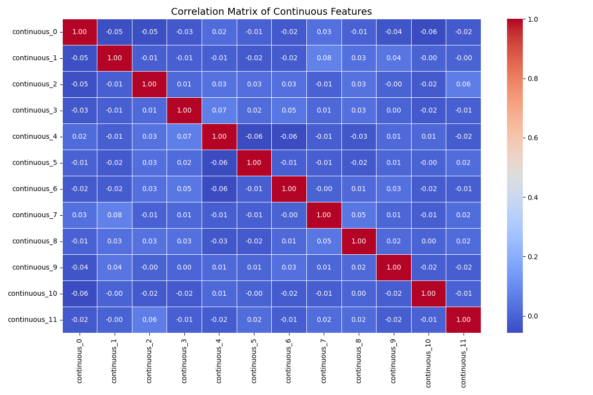
continuous_0
| Statistic | Train | Test |
|---|---|---|
| Mean | -0.05441 | 0.00444 |
| Median | -0.07885 | -0.01849 |
| Std dev | 0.97054 | 1.02992 |
| Variance | 0.94195 | 1.06073 |
| Min | -2.76482 | -2.52406 |
| Max | 3.33386 | 2.29241 |
| Range | 6.09867 | 4.81647 |
| 25 percentile | -0.72236 | -0.6874 |
| 75 percentile | 0.61314 | 0.72551 |
| Skewness | 0.08904 | -0.00677 |
| Kurtosis | -0.11421 | -0.49433 |
| Coefficient of variation | -17.83801 | 231.79955 |
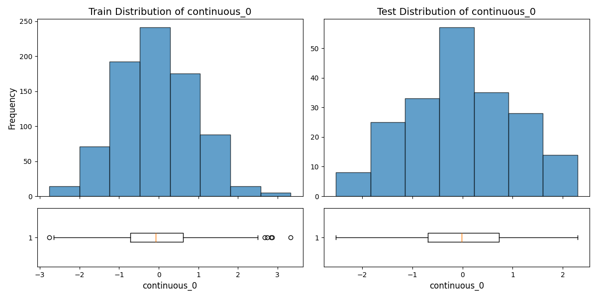
continuous_1
| Statistic | Train | Test |
|---|---|---|
| Mean | -0.0743 | -0.03063 |
| Median | -0.05645 | -0.03345 |
| Std dev | 1.04198 | 0.98411 |
| Variance | 1.08571 | 0.96847 |
| Min | -3.40841 | -4.14059 |
| Max | 2.89678 | 2.67802 |
| Range | 6.30519 | 6.81861 |
| 25 percentile | -0.7935 | -0.51434 |
| 75 percentile | 0.64481 | 0.59592 |
| Skewness | -0.08127 | -0.55802 |
| Kurtosis | -0.03328 | 1.6262 |
| Coefficient of variation | -14.02386 | -32.12493 |
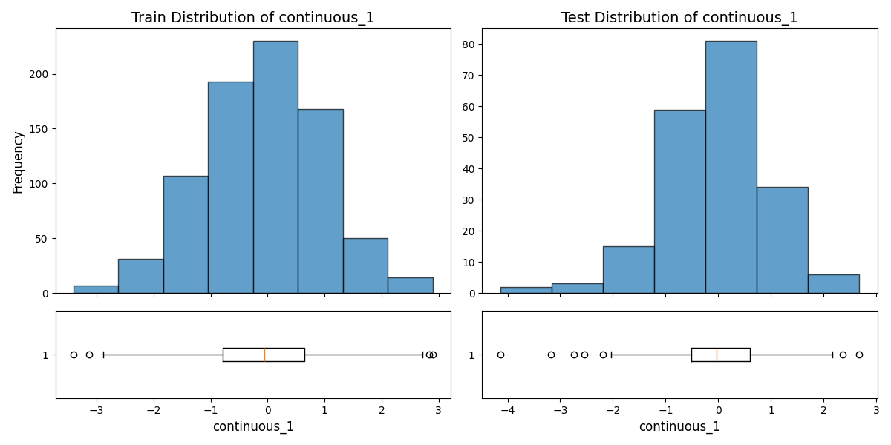
continuous_2
| Statistic | Train | Test |
|---|---|---|
| Mean | -0.03122 | -0.07684 |
| Median | 0.02155 | -0.09406 |
| Std dev | 0.9874 | 1.04793 |
| Variance | 0.97496 | 1.09816 |
| Min | -2.95677 | -2.77873 |
| Max | 2.64227 | 2.84583 |
| Range | 5.59904 | 5.62456 |
| 25 percentile | -0.70896 | -0.68922 |
| 75 percentile | 0.65072 | 0.55055 |
| Skewness | -0.09237 | 0.10792 |
| Kurtosis | -0.2262 | 0.06293 |
| Coefficient of variation | -31.63205 | -13.63807 |
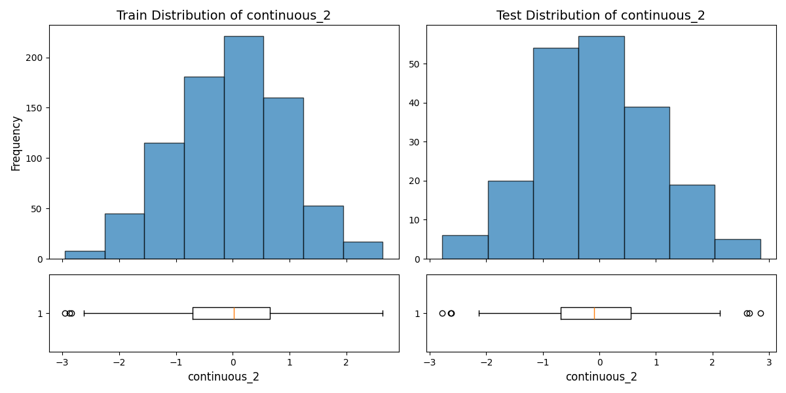
continuous_3
| Statistic | Train | Test |
|---|---|---|
| Mean | 0.06319 | -0.03265 |
| Median | 0.05986 | -0.03277 |
| Std dev | 1.01904 | 1.00692 |
| Variance | 1.03844 | 1.01388 |
| Min | -2.72276 | -2.87787 |
| Max | 3.80417 | 2.31565 |
| Range | 6.52694 | 5.19352 |
| 25 percentile | -0.63207 | -0.69188 |
| 75 percentile | 0.74955 | 0.61838 |
| Skewness | 0.07569 | -0.24278 |
| Kurtosis | -0.02698 | 0.05917 |
| Coefficient of variation | 16.12765 | -30.83578 |
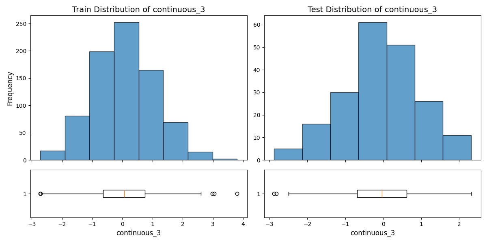
continuous_4
| Statistic | Train | Test |
|---|---|---|
| Mean | -0.03123 | 0.07071 |
| Median | -0.0386 | 0.12132 |
| Std dev | 1.03947 | 1.0334 |
| Variance | 1.0805 | 1.06792 |
| Min | -3.38742 | -2.67877 |
| Max | 3.25869 | 2.63332 |
| Range | 6.64611 | 5.31209 |
| 25 percentile | -0.71696 | -0.57418 |
| 75 percentile | 0.67355 | 0.77178 |
| Skewness | -0.00376 | -0.13178 |
| Kurtosis | -0.16319 | -0.24541 |
| Coefficient of variation | -33.28175 | 14.61458 |
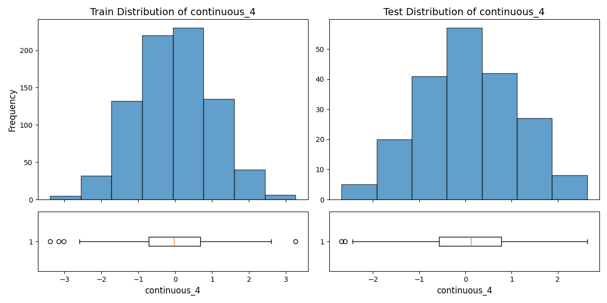
continuous_5
| Statistic | Train | Test |
|---|---|---|
| Mean | -0.03833 | -0.03125 |
| Median | -0.04509 | -0.03584 |
| Std dev | 0.98631 | 0.93847 |
| Variance | 0.9728 | 0.88073 |
| Min | -2.93106 | -2.26483 |
| Max | 2.95604 | 3.0846 |
| Range | 5.8871 | 5.34943 |
| 25 percentile | -0.72542 | -0.69258 |
| 75 percentile | 0.63339 | 0.60112 |
| Skewness | 0.06154 | 0.28601 |
| Kurtosis | -0.005 | 0.20668 |
| Coefficient of variation | -25.73176 | -30.03367 |
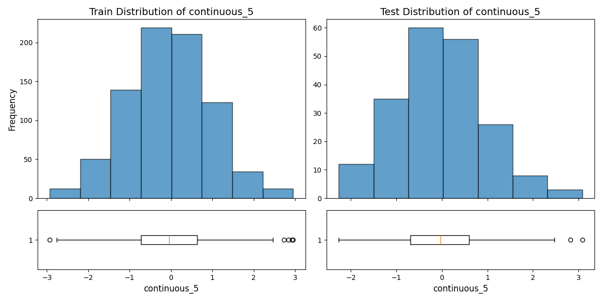
continuous_6
| Statistic | Train | Test |
|---|---|---|
| Mean | 0.02651 | 0.02662 |
| Median | 0.04466 | -0.03674 |
| Std dev | 0.99598 | 0.88461 |
| Variance | 0.99198 | 0.78254 |
| Min | -3.99636 | -2.95957 |
| Max | 2.98311 | 2.12271 |
| Range | 6.97946 | 5.08228 |
| 25 percentile | -0.61108 | -0.51116 |
| 75 percentile | 0.71659 | 0.68173 |
| Skewness | -0.24915 | -0.07338 |
| Kurtosis | 0.49793 | -0.07575 |
| Coefficient of variation | 37.57681 | 33.22547 |
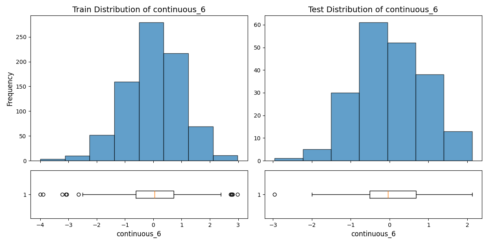
continuous_7
| Statistic | Train | Test |
|---|---|---|
| Mean | -0.01526 | -0.02907 |
| Median | -0.00088 | -0.10335 |
| Std dev | 0.97508 | 0.95397 |
| Variance | 0.95077 | 0.91006 |
| Min | -2.98598 | -2.22881 |
| Max | 2.60796 | 2.52827 |
| Range | 5.59395 | 4.75709 |
| 25 percentile | -0.70464 | -0.69686 |
| 75 percentile | 0.63158 | 0.55572 |
| Skewness | 0.01487 | 0.25442 |
| Kurtosis | -0.21643 | -0.37718 |
| Coefficient of variation | -63.90254 | -32.81805 |
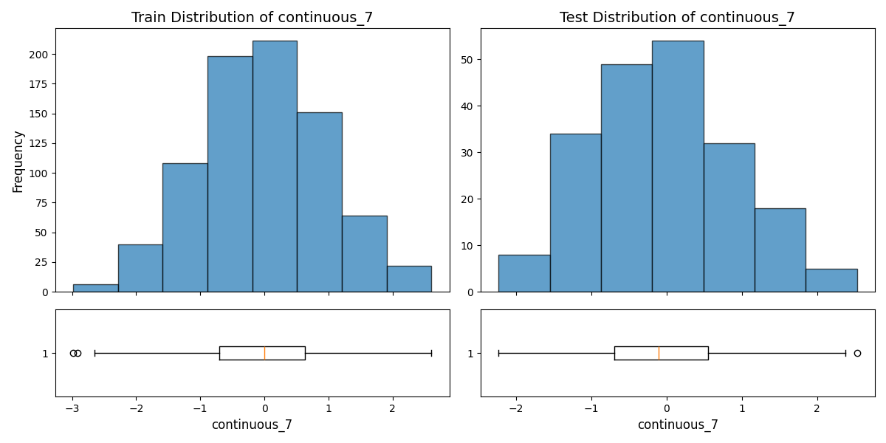
continuous_8
| Statistic | Train | Test |
|---|---|---|
| Mean | -0.01603 | 0.17042 |
| Median | -0.00732 | 0.26651 |
| Std dev | 0.98664 | 0.95348 |
| Variance | 0.97346 | 0.90912 |
| Min | -3.05122 | -2.64712 |
| Max | 3.27348 | 3.0055 |
| Range | 6.3247 | 5.65262 |
| 25 percentile | -0.69644 | -0.57931 |
| 75 percentile | 0.64805 | 0.86813 |
| Skewness | -0.00444 | -0.16071 |
| Kurtosis | -0.02668 | 0.42342 |
| Coefficient of variation | -61.55153 | 5.59484 |
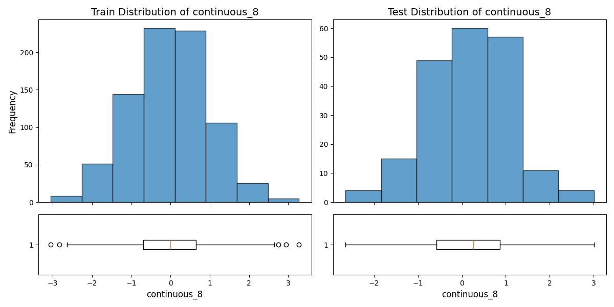
continuous_9
| Statistic | Train | Test |
|---|---|---|
| Mean | 0.01001 | -0.06056 |
| Median | 0.06491 | -0.05034 |
| Std dev | 0.98292 | 0.92372 |
| Variance | 0.96613 | 0.85327 |
| Min | -3.01538 | -3.61515 |
| Max | 3.49202 | 1.9988 |
| Range | 6.5074 | 5.61395 |
| 25 percentile | -0.64042 | -0.63419 |
| 75 percentile | 0.69619 | 0.60081 |
| Skewness | -0.17203 | -0.31088 |
| Kurtosis | -0.01072 | 0.37491 |
| Coefficient of variation | 98.16275 | -15.25201 |
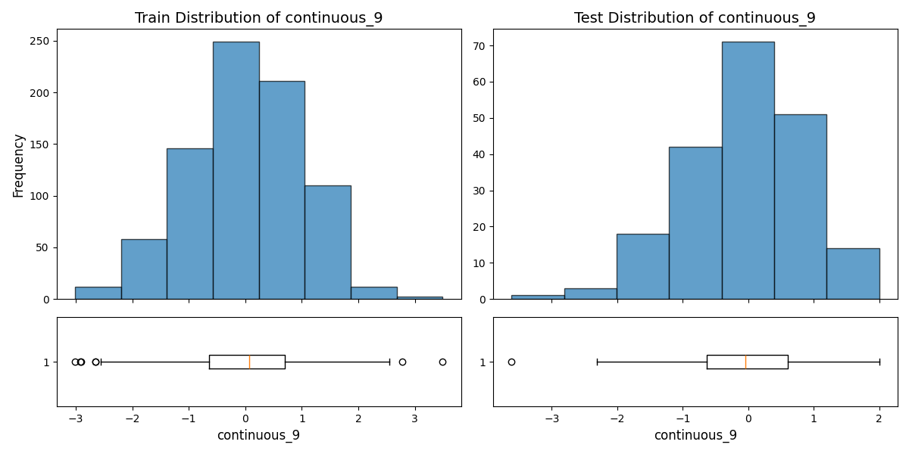
continuous_10
| Statistic | Train | Test |
|---|---|---|
| Mean | 0.02247 | -0.04084 |
| Median | 0.04481 | -0.02502 |
| Std dev | 0.97591 | 1.02442 |
| Variance | 0.95241 | 1.04943 |
| Min | -2.66611 | -2.82378 |
| Max | 2.88411 | 2.79043 |
| Range | 5.55021 | 5.6142 |
| 25 percentile | -0.63879 | -0.75549 |
| 75 percentile | 0.72034 | 0.70767 |
| Skewness | -0.04675 | -0.1774 |
| Kurtosis | -0.26223 | -0.16588 |
| Coefficient of variation | 43.42497 | -25.08154 |
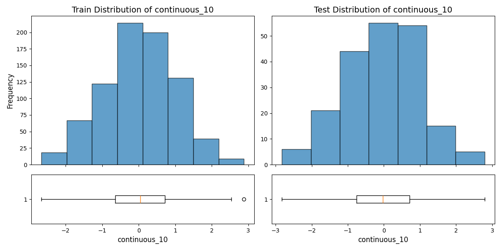
continuous_11
| Statistic | Train | Test |
|---|---|---|
| Mean | 0.04144 | -0.06161 |
| Median | 0.05171 | -0.13826 |
| Std dev | 1.01042 | 1.11388 |
| Variance | 1.02096 | 1.24074 |
| Min | -2.78277 | -2.74541 |
| Max | 3.01925 | 2.88466 |
| Range | 5.80201 | 5.63007 |
| 25 percentile | -0.65632 | -0.90547 |
| 75 percentile | 0.70363 | 0.68721 |
| Skewness | -0.01961 | 0.19227 |
| Kurtosis | -0.25847 | -0.38922 |
| Coefficient of variation | 24.3825 | -18.07995 |
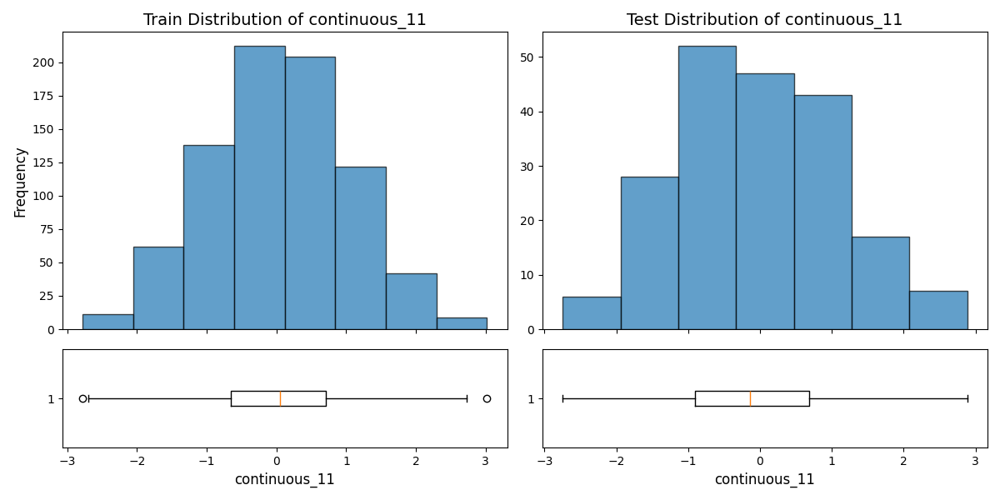
Categorical Features
categorical_0
| Statistic | Train | Test |
|---|---|---|
| Frequency | 0.0: 151 1.0: 148 2.0: 161 3.0: 168 4.0: 172 |
0.0: 37 1.0: 35 2.0: 44 3.0: 42 4.0: 42 |
| Proportion | 0.0: 18.88% 1.0: 18.50% 2.0: 20.12% 3.0: 21.00% 4.0: 21.50% |
0.0: 18.50% 1.0: 17.50% 2.0: 22.00% 3.0: 21.00% 4.0: 21.00% |
| Num unique | 5 | 5 |
| Entropy | 2.319477819820703 | 2.316634515500715 |
| Chi2 stat | 0.3924816117829398 | 0.3924816117829398 |
| P value | 0.9830878162204245 | 0.9830878162204245 |
| Degrees of freedom | 4 | 4 |
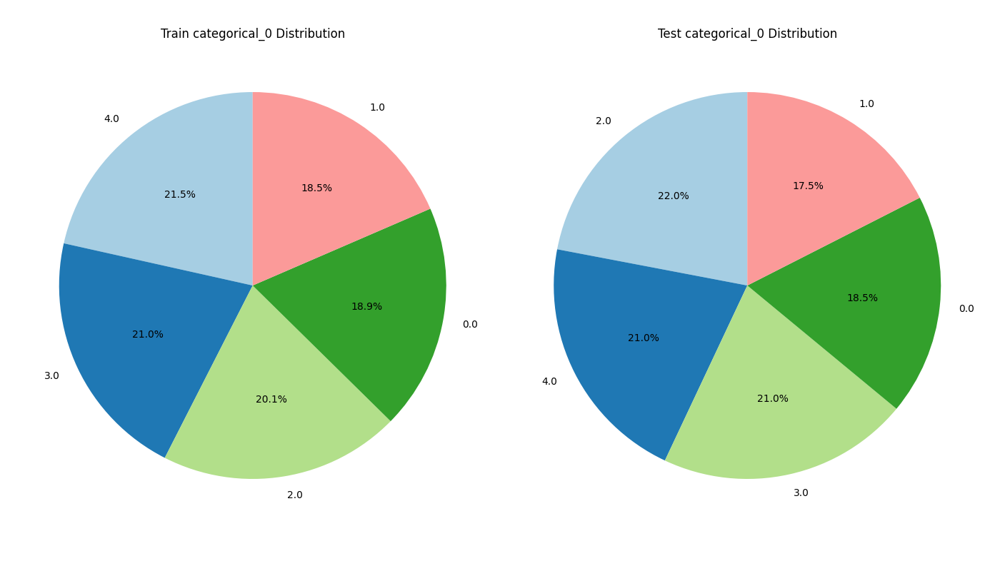
categorical_1
| Statistic | Train | Test |
|---|---|---|
| Frequency | 0.0: 194 1.0: 182 2.0: 206 3.0: 218 |
0.0: 54 1.0: 52 2.0: 52 3.0: 42 |
| Proportion | 0.0: 24.25% 1.0: 22.75% 2.0: 25.75% 3.0: 27.25% |
0.0: 27.00% 1.0: 26.00% 2.0: 26.00% 3.0: 21.00% |
| Num unique | 4 | 4 |
| Entropy | 1.9967499306477516 | 1.9934212519736807 |
| Chi2 stat | 3.6178475708670756 | 3.6178475708670756 |
| P value | 0.30579624554428547 | 0.30579624554428547 |
| Degrees of freedom | 3 | 3 |
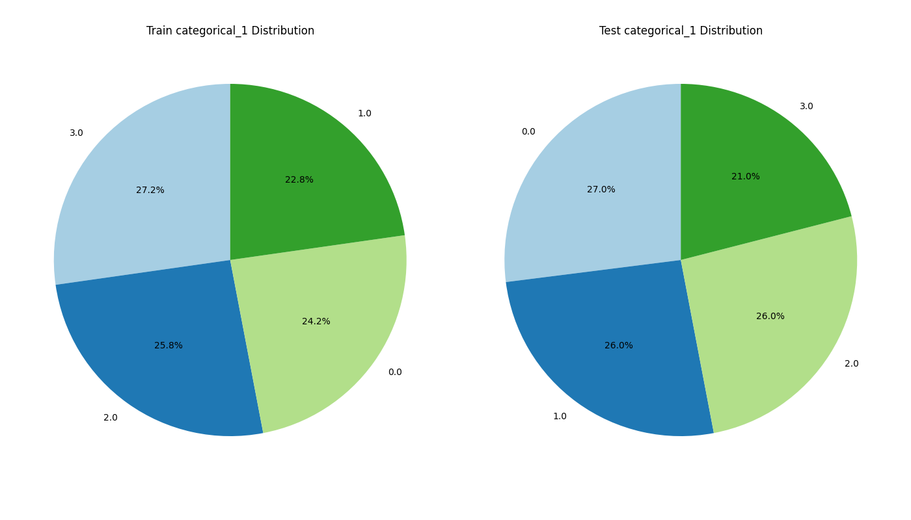
categorical_2
| Statistic | Train | Test |
|---|---|---|
| Frequency | 0.0: 147 1.0: 173 2.0: 161 3.0: 166 4.0: 153 |
0.0: 41 1.0: 38 2.0: 50 3.0: 42 4.0: 29 |
| Proportion | 0.0: 18.38% 1.0: 21.62% 2.0: 20.12% 3.0: 20.75% 4.0: 19.12% |
0.0: 20.50% 1.0: 19.00% 2.0: 25.00% 3.0: 21.00% 4.0: 14.50% |
| Num unique | 5 | 5 |
| Entropy | 2.3195349135445777 | 2.3006938507530177 |
| Chi2 stat | 4.594255258203528 | 4.594255258203528 |
| P value | 0.33151707742093617 | 0.33151707742093617 |
| Degrees of freedom | 4 | 4 |
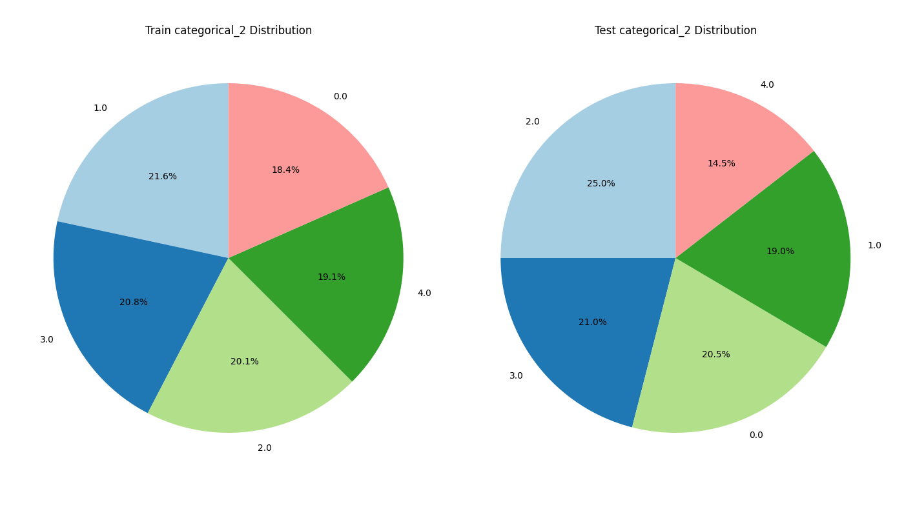